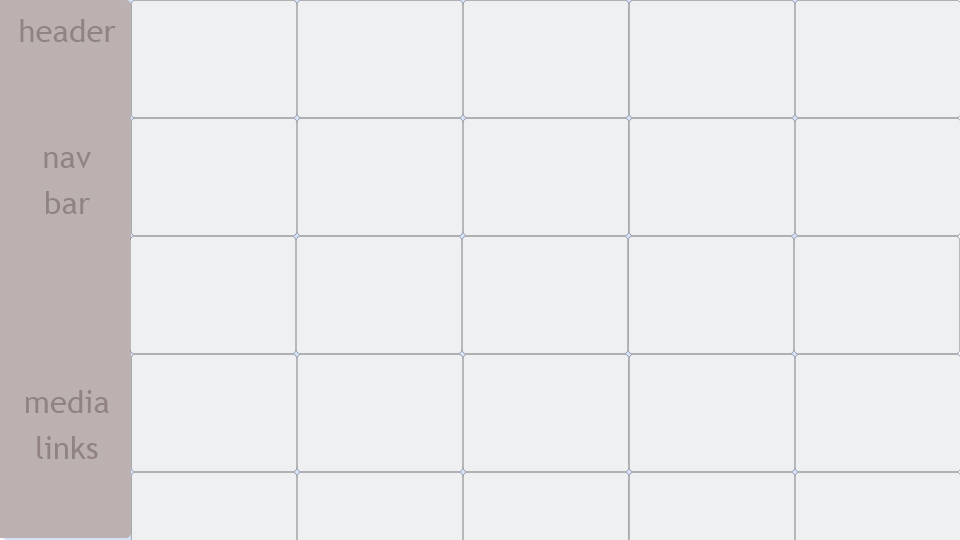

Project Title
CV Photography.
This is the template we decided to test out for this assignment. Went with a simple design of the nav bar to the left and the gallery of the photos to the right.
Business Needs
What business needs are driving this project?
- The need that is driving this concept is the desire to get the stakeholders photoraphy setup in a single gallery location instead of spread across multiple media websites.
If this is successful, what will be the impact on business?
- By making an official gallery/portfolio the stakeholder maybe able to get others interested in their photography.
What is the revenue model for this product?
- Inital setup has no revenue model. There wil be a contact page for commision if any viewers are interested. Depending on how that goes stakeholder mentioned swapping to an ad revenue model if views prove to grow.
Users
Who are the target users?
- Nature Enthusiasts (could include tourists as well in this group)
- Photographers
Describe the main categories of users who will use the product in as much detail as possible.
- Nature Enthusiasts - Generally those who enjoy nature and like to spend as much time surrounded by it as posible They are typically in things for the adventure and to get to see new things.
- Photographers - Those who enjoy taking picutres of things. We determined those who would be interested in this type of sight would be other nature photographers than regular photographer
Why do they use the product?
- They want to see pictures of places to go.
- These are going to be people who are looking into what others have done as well as what they have not done yet. Where they have been, and where they have not been.
- To see if they like the art enough to hire said photrapher.
- On the chance they do, they would be using them to capture memories and to share them with others.
What are their primary motivators, passions, and goals?
- Nature Enthusiasts are generally going to be more interested in finding new places to go. They could include families wanting to take a trip, to those who are looking for places to visit alone. Their driving goal will be the adventure itself.
- Photographers will be interested in seeing what the competition is capable of.
Goals
What are the project goals? Ideally, you can summarize this as a short list of things you aim to achieve with this project. If you have three to five items in this list, you’re probably in good shape.
- Exposure.
- Share passion with other enthusiasts.
- Try to get some side income from either ads or commision.
Tasks and Scenarios
Tasks
- Find picutres.
- View photos by location, trip, or in one gallery.
- Find interesting places to go.
- Subimt an inquiry for commision work.
Scenario 1
- Family is looking for a place to go on a vacation and would like to see what it looks like in the city and in a rural environment for possible day trips while there.
Scenario 2
- An adult is looking up information on getting photoraphy for their wedding and would like a photrapher that is nearby their location.
Scenario 3
- Large family is having their yearly family reunion. Uncle Bob last year decided to have a few too many at the punch bowl and ended up having last years shots way out of focus and the video was highly unstable. Uncle Bob had a rough year last year so they gave him a break. This year since we all know Uncle Bob will be at it again, they have decided to play it safe and look online for a photographer that can take photos and videos of the whole family that way they do not have to worry about Uncle Bob. Plus it would be great to have him on professional video so when they have their intervention later this year they can show him how it always ends up when he partakes of the punch bowl too liberally.
Success Measures
How does the client measure success?
- Portfolio will be a success if it adequately showcases their skills.
Which levers influence whether the product is profitable (successful) or not?
- It will profitable if they receive any commision requests or ad revenue if they decide to change to that route instead.
How does the stakeholder define which user behaviors translate to profit? What key performance indicators are tracked?
- They said, "views = exposure, more exposure = possible contact for side work."
Are there any other numbers/factors that stakeholders track to determine if the product is performing well or poorly?
- They said they would like to implement the ability to leave feedback on their work. This way they can see how to improve hopefully in the future.
Competitor
Identify a single competitor
What are its strengths?
- Professional Skills
- Numerous client options
What are its weakness?
- None that we were able to find in regards to just the two of us checking out the webiste.
Risks
Are there any significant red flags that you see up front?
- No red flags can bee seen at this point in the project. The stakeholder is green and has little to lose. Still somewhat hesitant about taking the step of putting their work out their officially.